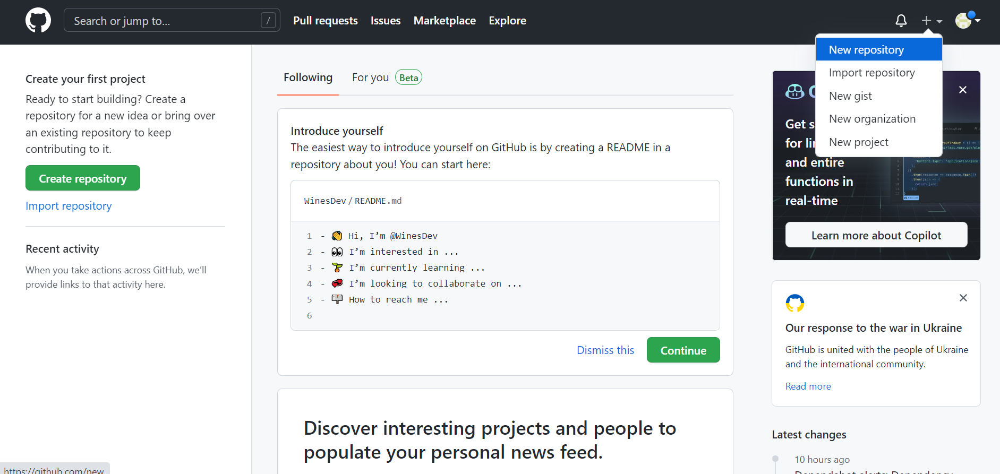
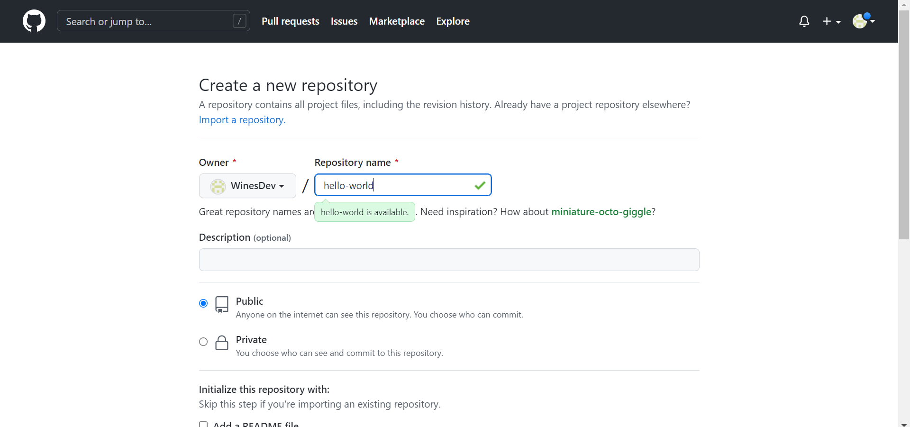
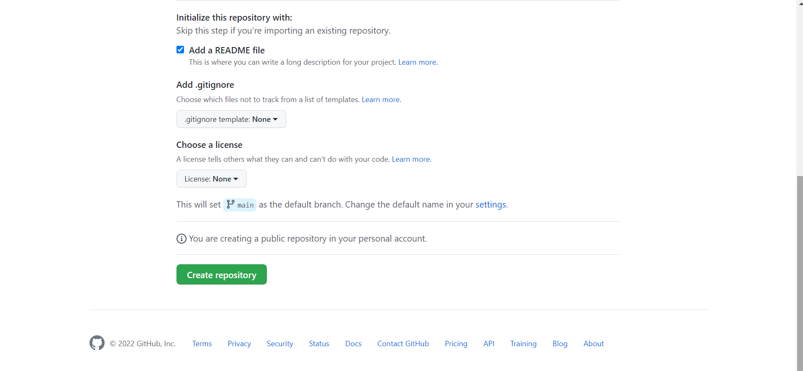
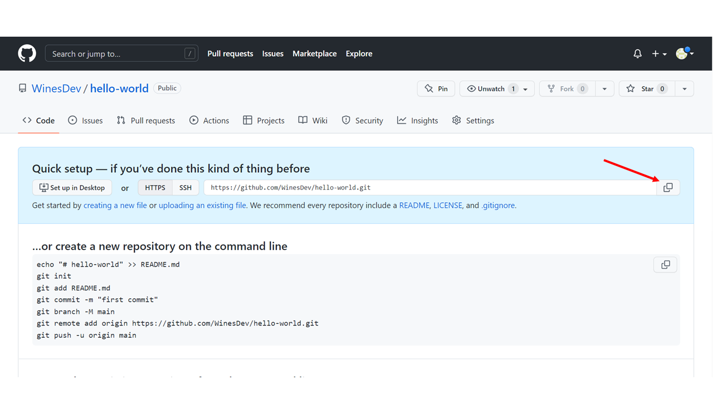

GitHub Introduction
What is GitHub?
- GitHub is a Git repository platform used for code sharing.
- It helps every team member work together on a project from anywhere, making it easy to collaborate.
Getting started with GitHub
Go to GitHub and signup for an account.
Note: Remember to use the same e-mail address you used in the Git config.
Creating a Repository on GitHub
After signing up a GitHub Account, you can now create a new Repo:
and fill in the relevant details:
Then click the "Create repository" button
In the example above, I named my repository "hello-world". You can choose "Public" if you want anyone to see your repository or "Private" if you want to choose only those who can see and commit in the repository. You can check the "Add a READ ME file" so you can write description about what your project is all about.
Push Local Repository to GitHub
Since we have already set up a local Git repo, we are going to push that to GitHub:
Copy the URL, or click the clipboard marked in the image above.
Now paste it the following command:
git remote add origin [URL] specifies that you are adding a remote repository, with the specified URL, as an origin to your local Git repo.
Now we are going to push our master branch to the origin url, and set it as the default remote branch:
Enumerating objects: 22, done.
Counting objects: 100% (22/22), done.
Delta compression using up to 16 threads
Compressing objects: 100% (22/22), done.
Writing objects: 100% (22/22), 92.96 KiB | 23.24 MiB/s, done.
Total 22 (delta 11), reused 0 (delta 0), pack-reused 0
remote: Resolving deltas: 100% (11/11), done.
To https://github.com/WinesDev/hello-world.git
* [new branch] master -> master
Branch 'master' set up to track remote branch 'master' from 'origin'.
Note: Since this is the first time you are connecting to GitHub, you will get some kind of notification you to authenticate this connection.
Now, go back into GitHub and see that the repository has been updated: